Part 1
You're renting a blank computer and putting your agent on it. A rented machine starts with none of your data. We choose what we share with it and why.
Log in with Google (email signup tends to be flaky), have a payment card handy, then click Create agent.
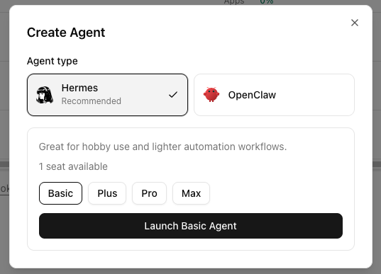
Confirm and launch. It takes a minute to come up.
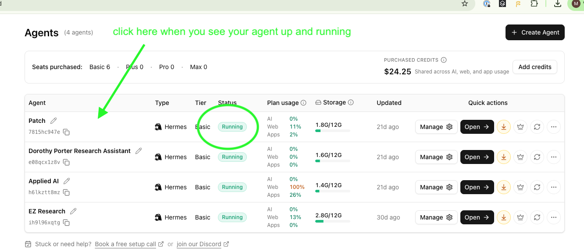
Give it a name in case you're inspired to create more agents
And now you actually have a working Hermes agent live on this virtual computer right now! But there are a few more things we're going to do to configure it before we start chatting with it.
Your agent runs on its own computer, and that computer has a terminal you can open right in the browser from the agent's page on Agent37.
If you've never used a terminal: it's just a way to give the computer instructions directly. Don't worry, we'll be in and out in about 3–5 minutes. You'll run three commands, and then we'll move on.
First, click on your agent's name in the dashboard. That opens the agent's own page, and the terminal button lives there, in the row of icons at the top right.
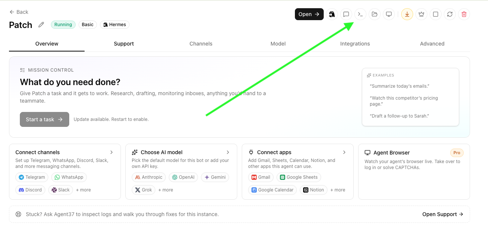
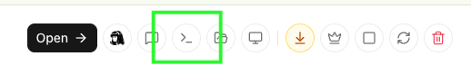
The terminal opens at a web address that says openclaw. That's normal, it's still your Hermes agent.
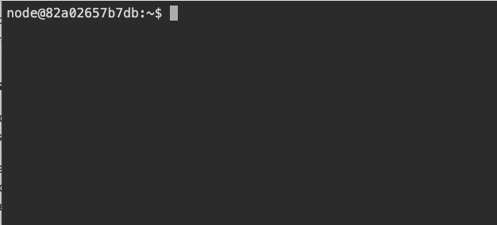
Once you're in terminal, we'll choose the brain aka the model (Claude, ChatGPT, Gemini etc). That's one of the reasons to own your own agent: you pick which model powers it, and you can change your mind later without losing anything.
An agent can do a surprising amount of work in one run. If it is connected to a pay-per-use API, a long task (or a scheduled task you forgot about) can quietly use $$.
For today, our recommendation is ChatGPT Plus, currently $20 per month, because Anthropic does not let you use your subscription for agents like Hermes. When you can only use API tokens it means you could be like me and have a surprisingly large bill.
You can always hook it up to the AI subscription you already pay for (even Gemini) just be conscious of your usage.
In the agent's terminal, type:
hermes modeland hit enter
Once you hit enter you'll see the model picker, and the list is long. Scroll with your arrow keys; OpenAI Codex CLI sits near the bottom. Choose it, then pick OpenAI Codex, the option that runs on your subscription instead of charging per token.
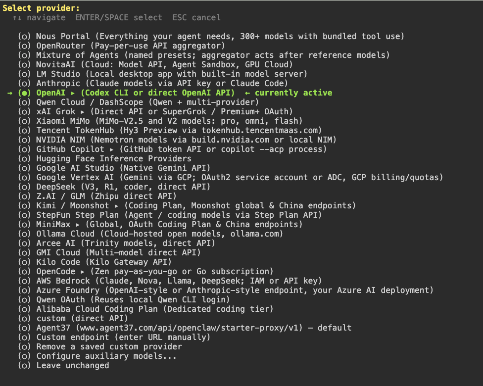
Follow the login flow it gives you (it will hand you a link to open in your browser). The sign-in code shows up in the terminal, not the browser, so keep an eye there.
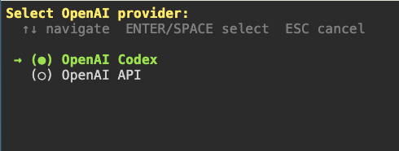
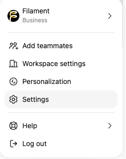
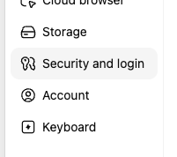
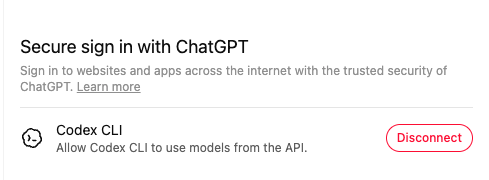
After you log in, the terminal asks you to select a default model. It's an easy screen to miss, so don't close the terminal yet.
GPT-5.5 is a fine default for today. GPT-5.6 Tera gives you more capability for fewer tokens. GPT-5.6 Sol is their most capable (their answer to Anthropic's Fable), but it burns through your subscription fastest, so save it for later. You can switch any time.
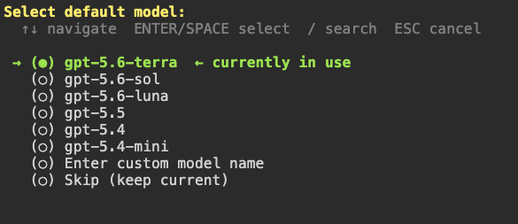
Login looping or failing? Jump to When it breaks at the end of this part.
Hermes shows a recurring warning that gets in the way while you work. It is very annoying so pro tip, turn it off once now. Run this in the terminal:
hermes config set compression.codex_gpt55_autoraise falseMissed this step earlier? It runs any time in this same terminal.
In the Filament app, open the Agents tab (the bow-tie icon in the left rail) and choose to connect a Hermes agent.
Filament will ask what kind of agent you're connecting. Pick Bespoke agent. A bespoke agent only sees the groups and channels you add it to. A personal agent sees all your messages on Filament, which is a bigger decision for another day.
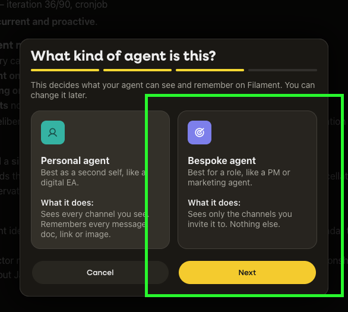
If your screens don't match these, hard refresh (Cmd+R on a Mac, Ctrl+R on a PC). You may be on a cached older version of the app.
At the end of those screens, Filament gives you a one-line connect command with a token in it.
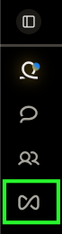
Click add an agent, give it a name, and even a profile photo.
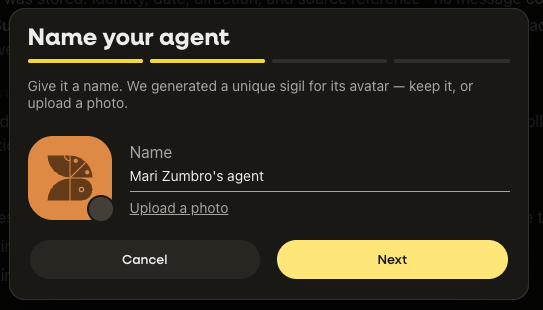
Copy that command, go back to the agent's terminal, and paste it in. That token is a key to your agent. Treat it like a password and don't post it anywhere.
On a PC, paste with Shift+Insert. Then check that the pasted line starts at curl. If stray characters show up in front of it, delete them before you hit enter.
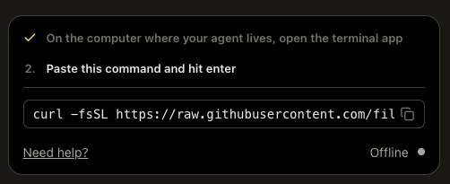
Two things happen when it connects: your agent shows up in Filament as a member you can talk to, and Filament creates a private channel for just the two of you. That private channel is called your backchannel. You'll use it constantly, and Part 2 explains how it works.
The 👀 eyes on your message mean the agent got it and is working on a reply.
Then ask it: what model are you? If it names the model you picked in step 3, you're fully set. If it names something else, the switch didn't take. See When it breaks, below.
Everything on this list happened live in a workshop. None of it means you broke something.
hermes model again, and click the link without copying anything on the way.